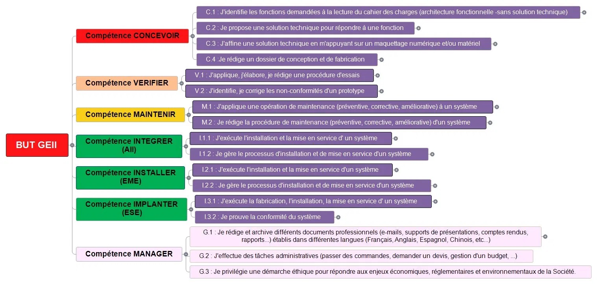

Référentiel BUT GEII
Mes compétences
Compétences développées en BUT GEII
Durant ma formation en BUT GEII, j'ai été amené à développer un ensemble de compétences techniques et professionnelles à travers des projets concrets, des SAÉ, des TP encadrés et du travail en autonomie.
Ces compétences sont organisées en blocs de compétences — les grands axes qui correspondent aux capacités attendues d'un technicien supérieur dans les domaines de l'électronique, de l'automatisme et de l'énergie.
Référentiel national
BUT GEII — Blocs de compétences

Référentiel national de compétences BUT GEII
Référentiel BUT GEII
Concevoir & Vérifier
Compétence C
Concevoir
Compétence V
Vérifier
Outils & domains
Compétences techniques
Conception complète de cartes, CAO électronique (Proteus ISIS/ARES), fabrication matérielle traversante (THD - HTUT 4) et mesures en laboratoire.
Programmation C/C++ sur architectures ARM Cortex (STM32 sous Keil µVision) et AVR (Arduino), gestion des registres bas niveau, timers et protocoles complexes.
Conception d'algorithmes industriels complexes (GRAFCET), programmation d'API Siemens S7 (TIA Portal) et pilotage de stations pneumatiques réelles (FESTO).
Étude des réseaux électriques industriels, compensation d'énergie réactive (facteur de puissance), schématique WinRelais et câblage de départs-moteurs triphasés.
Gestion rigoureuse du Cycle en V de projets selon les standards d'assurance qualité ISO 9001, rédaction des livrables (CDC, DDC, DDF, DDV) et calcul formel sous Maple.
Profil international
Langues
Anglais B2
Utilisation courante et fluide en environnement technique. Lecture autonome de documentations constructeurs (datasheets), rédaction de comptes-rendus techniques, et utilisation de logiciels intégralement en anglais.
Espagnol B1
Niveau intermédiaire. Bonne compréhension écrite et orale des consignes, compétences relationnelles fondamentales et capacité à échanger de manière simple en contexte professionnel.
Méthodologies professionnelles